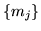

Most often, however, cepstral parameters are required and these are indicated by setting the target kind to MFCC standing for Mel-Frequency Cepstral Coefficients (MFCCs). These are calculated from the log filterbank amplitudes  using the Discrete Cosine Transform
MFCCs are the parameterisation of choice for many speech recognition applications. They give good discrimination and lend themselves to a number of manipulations. In particular, the effect of inserting a transmission channel on the input speech is to multiply the speech spectrum by the channel transfer function. In the log cepstral domain, this multiplication becomes a simple addition which can be removed by subtracting the cepstral mean from all input vectors. In practice, of course, the mean has to be estimated over a limited amount of speech data so the subtraction will not be perfect. Nevertheless, this simple technique is very effective in practice where it compensates for long-term spectral effects such as those caused by different microphones and audio channels. To perform this so-called Cepstral Mean Normalisation (CMN) in HTK it is only necessary to add the _Z qualifier to the target parameter kind. The mean is estimated by computing the average of each cepstral parameter across each input speech file. Since this cannot be done with live audio, cepstral mean compensation is not supported for this case.
In addition to the mean normalisation the variance of the data can be normalised. For improved robustness both mean and variance of the data should be calculated on a larger units (e.g. on all the data from a speaker instead of just on a single utterance). To use speaker-/cluster-based normalisation the mean and variance estimates are computed offline before the actual recognition and stored in separate files (two files per cluster). The configuration variables CMEANDIR and VARSCALEDIR point to the directories where these files are stored. To find the actual filename a second set of variables (CMEANMASK and VARSCALEMASK ) has to be specified. These masks are regular expressions in which you can use the special characters ?, * and %. The appropriate mask is matched against the filename of the file to be recognised and the substring that was matched against the % characters is used as the filename of the normalisation file. An example config setting is:
CMEANDIR = /data/eval01/plp/cmn CMEANMASK = %%%%%%%%%%_* VARSCALEDIR = /data/eval01/plp/cvn VARSCALEMASK = %%%%%%%%%%_* VARSCALEFN = /data/eval01/plp/globvar
So, if the file sw1-4930-B_4930Bx-sw1_000126_000439.plp is to be
recognised then the normalisation estimates would be loaded from the
following files:
/data/eval01/plp/cmn/sw1-4930-B /data/eval01/plp/cvn/sw1-4930-B
The file specified by VARSCALEFN contains the global target variance vector, i.e. the variance of the data is first normalised to 1.0 based on the estimate in the appropriate file in VARSCALEDIR and then scaled to the target variance given in VARSCALEFN .
The format of the files is very simple and each of them just contains one vector. Note that in the case of the cepstral mean only the static coefficients will be normalised. A cmn file could for example look like:
<CEPSNORM> <PLP_0> <MEAN> 13 -10.285290 -9.484871 -6.454639 ...
The cepstral variance normalised always applies to the full observation vector after all qualifiers like delta and acceleration coefficients have been added, e.g.:
<CEPSNORM> <PLP_D_A_Z_0> <VARIANCE> 39 33.543018 31.241779 36.076199 ...
The global variance vector will always have the same number of dimensions as the cvn vector, e.g.:
<VARSCALE> 39 2.974308e+01 4.143743e+01 3.819999e+01 ...
These estimates can be generated using HCOMPV. See the reference section for details.